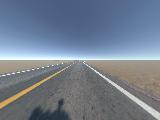
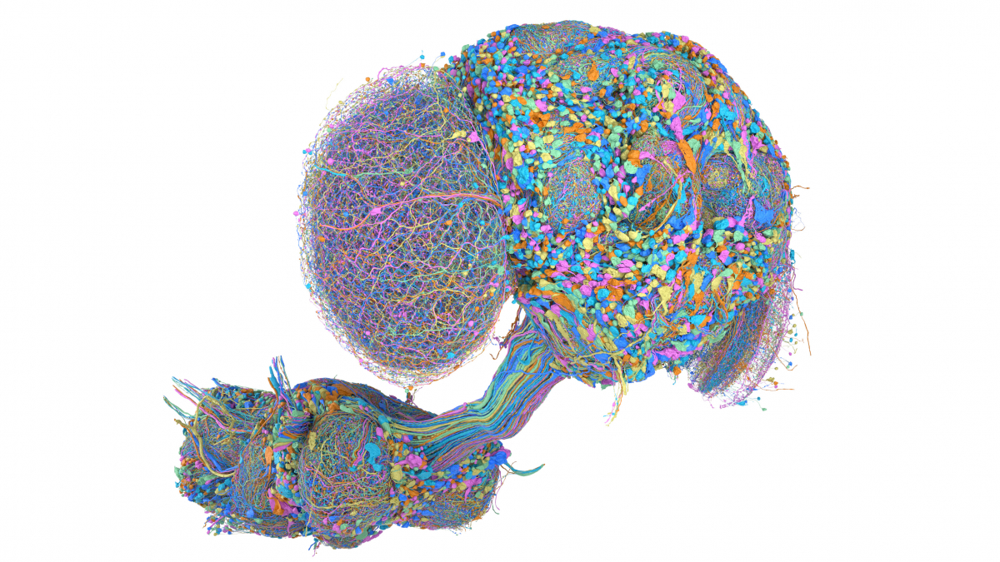

Bachelor’s thesis · Experimental record
Integrating and Evaluating a Fruit Fly Connectome Model for Visual Steering in a Driving Simulator
- Author
- Yechuan Wei
- University
- Turku University of Applied Sciences
- Degree programme
- Information and Communications Technology, Data Engineering and AI
- Graduation year
- 2026
From the first stimulus probes to camera input, a trainable recurrent network, and the final movement-feedback comparison. Follow each recorded attempt, including failures, interruptions, and short-lived improvements.
Main findings
- A model built from the fruit fly connectome, with 176,422 neurons, turns camera images into steering.
- It followed roads and passed bends, but completed no full route in the final normal-start tests.
- From disturbed starts, the car returned to the road centre in almost every matched test, but most runs did not stay stable for another 10 seconds.
- The typical failure was holding a turn for too long, until the car left the road.
- In the final experiment, the added movement signal entered the network at about 0.080% of the camera signal’s strength. Adding it gave no clear overall benefit.
See thesis Chapter 3 for the system, Chapter 4 for methods, and Chapter 5 for results.

These counts classify entries in this account; they are not totals of distinct compute jobs.
The development, from first tests to final comparison
The account follows every recorded attempt: its starting point, the change, what happened, and what followed. The replay collection brings together examples from the main stages.
The written accounts and experiment records follow the same 238 steps. Replays are labelled with their experiment, checkpoint and starting condition.
BUILDING THE SYSTEM
Follow one camera image through a driving decision
The upstream project supplied a connectome, annotations, and an initial model. This project added the visual mapping, trainable network, steering readout, collection and learning interfaces, matched starts, and evaluation.
160×120 camera→817 brightness values→1,634 L1/L2 inputs→Paired states · four updates→1,314 DN features→Steering
The implementation: from camera to training

What did the early eight-by-eight input retain?
These camera images were saved during C8 driving and recovered in C9. Compare each original with the 8×8 image the model received and a 32×24 diagnostic version. The 12 images come from separate driving cases.
The early learned mapping received 64 brightness values and four route or vehicle hints. C10 sampled 817 positions directly from the original image, using model eye-column directions. The later camera-only stages set the auxiliary inputs to zero.
Original source and values for this sample
First, test how stimulation changes the spiking model output
In these 20 early tests, visual stimulation was switched on and off or shown in reverse order, while the model’s output was recorded. No car was involved. Time is model time; Hz is spikes per second.
Blue: left HS. Orange: right HS. Green: left DNa02. Purple: right DNa02. Missing channels are left blank. Stimulation and withdrawal phases are marked on the plot. Other records are linked from their corresponding stages.
PARAMETER INHERITANCE
Where the parameters came from, and what was repaired
The main arrows show where each model’s weights came from. Side branches show separate training or tests. The full table also includes data reuse and code repairs, each labelled separately.
Open the main lineage as a scalable vector graphic
Numbers on the nodes are optimized transition counts at that checkpoint. Each stage has its own count; do not add them along the lineage.
Where C11 fits
C11 started from C10 and independently trained a camera-only PPO core. The later main line returned to the C10 representation, trained the C14 DN readout, and continued through C15. C11 final weights were a separate branch.
Branches after R11
R13, R14, R19 and R21 each restarted from the selected R11 checkpoint at 16,384 new transitions, with its saved optimizer state. R23 continued R21. R26, R27, R28, R30, R36 and R38 each used the same final R23 starting model; temporary weights from those failed attempts were not passed to the next attempt.
Complete directed relationships and evidence
The table lists every identified link and the record supporting it. Expand it for the full model, data and code relationships.Download the Mermaid source
Full model relationships and supporting records
RECORDED DRIVING · INPUT & OUTPUT
Recorded driving and neural activity
Replay a saved drive with its camera input, neural output, steering and vehicle motion.
Original driving scene
Brain input and output · same decisionDrag either view to rotate both
Grey dots show where cells sit in the fly. Positions are available for 122 of the 1,634 input cells and 1,308 of the 1,314 output neurons. Only those cells can be drawn; the others still take part in the model. Cells without recorded activity stay grey.
What happened to the vehicle
The car is drawn from its recorded position and heading. Grey shows the scoring route; the coloured line joins the saved vehicle positions.
Steering and route offset
The brightness values actually sent to the model
Where this value entered the network
Full input and DN values for this decision
Technical details · case identity and clocks
RESULTS · THESIS CHAPTER 5
Road following, recovery, and staying stable
R23, R25 and R38 used different generated roads. Compare results within each matched road pool; the tables identify the checkpoints, conditions and number of cases.
What does 0.080% measure?
This compares the strength of the two inputs as they entered the final R38 movement-feedback model. Across 24 final evaluation cases and 10,671 decisions, their root-mean-square (RMS) amplitudes were calculated over the same 176,422 nodes. Movement input was about 0.080% of camera input. The network can then strengthen or weaken either signal, so this ratio is not a percentage change in steering.
Both conditions started from the same R23 checkpoint and saved optimizer state. Both continued training the existing connection gains, readout and exploration scale, and added the same zero-initialised input map with a fresh optimizer. Movement feedback supplied previous steering, speed and turning rate; zero feedback supplied three zeros. Each condition had one continuation: 17,280 accepted driving transitions, 16,384 distinct transitions optimised four times, 65,536 transition uses and 1,024 updates.
Neither version finished a normal-driving route, and movement feedback made slightly less progress on every paired road. Recovery results were mixed. One zero-feedback case reached the 60-second limit only about 3.6 seconds after recovery confirmation, leaving too little follow-up to judge ten-second stability.
Watch the start that never held alignment for five secondsWatch the case that ran out of observation timeRECORDS & SCOPE
What the records contain
The account combines saved experiment files, written reports, and recorded evaluations.